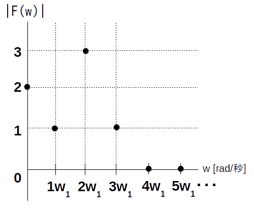
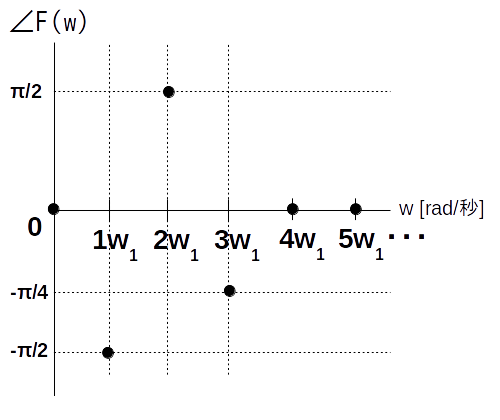

演習2-1 (個人): 式が分からない周期性時間領域アナログ信号 $f(t)$ から何らかの手法を用いてスペクトル $\textrm{F}(w)$が得られたという状況を考えます。
以下の振幅・位相スペクトルから実フーリエ級数展開を使って元のアナログ信号 $f(t)$ の式を復元してみましょう。
振幅スペクトルは以下の通りです。
※ $|\textrm{F}(w)| = 0\ ,\ (w>3\cdot w_1)$ とする
位相スペクトルは以下の通りです。
※ $\angle \textrm{F}(w) = 0\ ,\ (w>3\cdot w_1)$ とする
ただし基本角周波数は $w_1 = 4\pi$ [rad/秒]、基本周波数 $f_1 = 2$ [Hz]、周期 $\textrm{T}=1/2$ [秒]とします。
上に示した振幅、位相スペクトルのグラフから「複素フーリエ係数 $\textrm{C}[0]$、$\textrm{C}[1]$、$\textrm{C}[2]$、$\textrm{C}[3]$ の絶対値と偏角」を求めて下さい。
複素フーリエ係数から「実フーリエ級数展開の直流成分 $a_0$、基本波の振幅 $a_1$ と初期位相 $\phi_1$、第 2 高調波の振幅 $a_2$ と初期位相 $\phi_2$、第 3 高調波の振幅 $a_3$ と初期位相 $\phi_3$ 」を求めて下さい。
表計算ソフトを起動します。
時刻の範囲は $0 \leq t \leq 4$ 秒区間、代表点は 0.01 秒刻みとします。
一番上の最初の列のセルに「t」と書き、その下のセルから各時刻をオートフィルを使って入力します。
「t」と書いた右隣のセルに「f(t)」と書き、その下のセルからに各時刻における f(t) の値をオートフィルを使って入力します。
「t」「f(t)」の列を範囲選択してからグラフを挿入します。グラフの種類は散布図、線のみ、平滑化「なし」とします。
シートを保存します。ファイル名は「FR_2_1」として下さい(拡張子は表計算ソフトによる)。
指定場所に
「複素フーリエ係数 $\textrm{C}[0]$、$\textrm{C}[1]$、$\textrm{C}[2]$、$\textrm{C}[3]$ の絶対値と偏角」
「実フーリエ級数展開の直流成分 $a_0$、基本波の振幅 $a_1$ と初期位相 $\phi_1$、第 2 高調波の振幅 $a_2$ と初期位相 $\phi_2$、第 3 高調波の振幅 $a_3$ と初期位相 $\phi_3$ 」
「$f(t)$ の式」
「f(t)のグラフ」
を記述したり貼り付けたりして下さい。